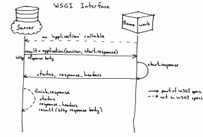
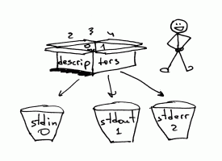

Very well written and understandable as always for non English speaker like me. Especially the pictures XD. Waiting for scoped variable
Also on Ruslan's Blog

Let’s Build A Simple Interpreter. Part 11.
I was sitting in my room the other day and thinking about how much we had …

Let’s Build A Web Server. Part 2.
Remember, in Part 1 I asked you a question: “How do you run a Django application, …
Let’s Build A Simple Interpreter. Part 12.
“Be not afraid of going slowly; be afraid only of standing still.” - Chinese …
Let’s Build A Simple Interpreter. Part 1.
“If you don’t know how compilers work, then you don’t know how …
Let’s Build A Simple Interpreter. Part 6.
Today is the day :) “Why?” you might ask. The reason is that today we’re …

Let’s Build A Web Server. Part 3.
“We learn most when we have to invent” —Piaget In Part 2 you created a …

Let’s Build A Simple Interpreter. Part 19: …
What I cannot create, I do not understand. —- Richard Feynman

Let’s Build A Simple Interpreter. Part 9.
I remember when I was in university (a long time ago) and learning systems …